LoRA カタログ
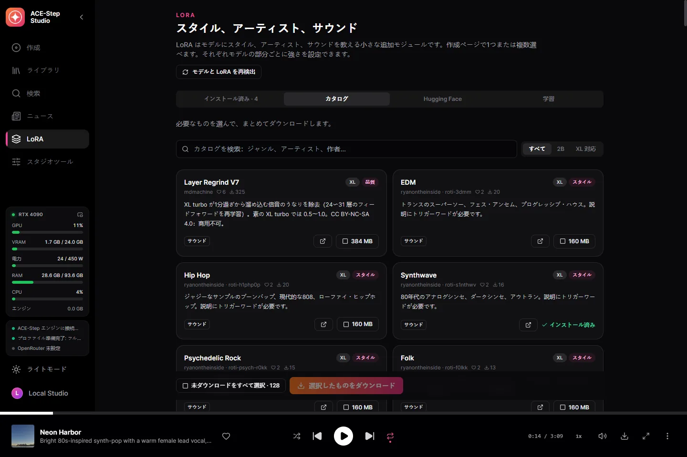
いいねとダウンロード数で Hugging Face から選んだ 131 の LoRA、説明と作者付き。
フルソングを書いて歌うオープン音楽モデル ACE-Step 1.5 のためのデスクトップスタジオ。
Windows 10/11 x64 と、VRAM 4 GB 以上の NVIDIA GPU（GTX 900 以降）。モデルは決めたときにスタジオ内からダウンロードします。
リリース版のクリーンインストールで、スタジオが保存したままの形でレンダリング。

いいねとダウンロード数で Hugging Face から選んだ 131 の LoRA、説明と作者付き。
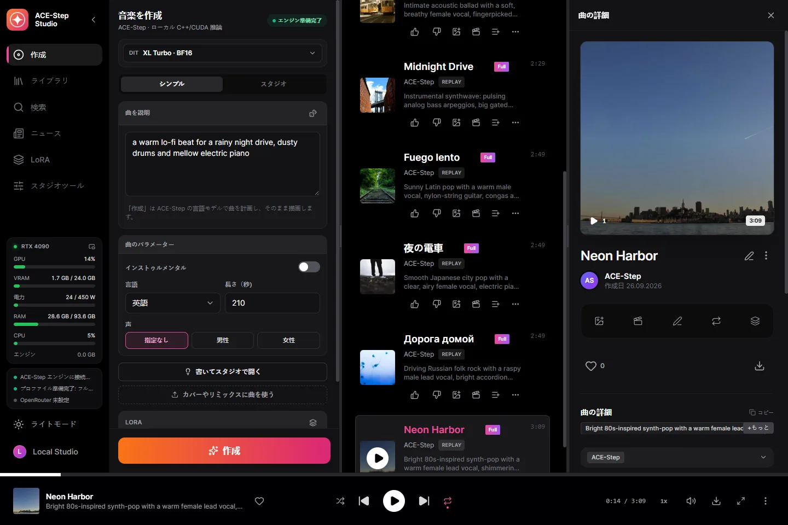
シンプルフォーム：アイデアを入れれば完成した曲が出てきます。
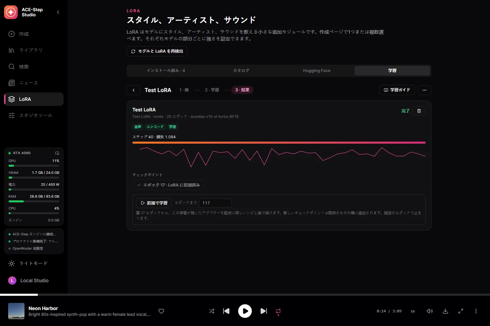
1 人のアーティストやスタイルの曲が、HOT-Step のトレーナーと LoKR レシピで GPU 上で LoRA になります。
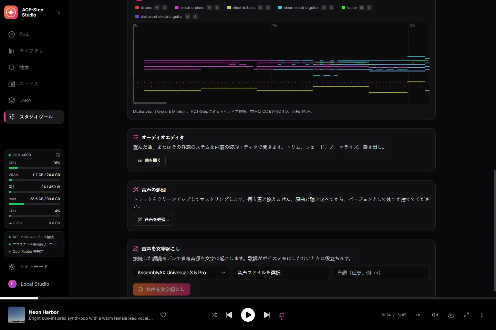
HT-Demucs で 6 ステム。
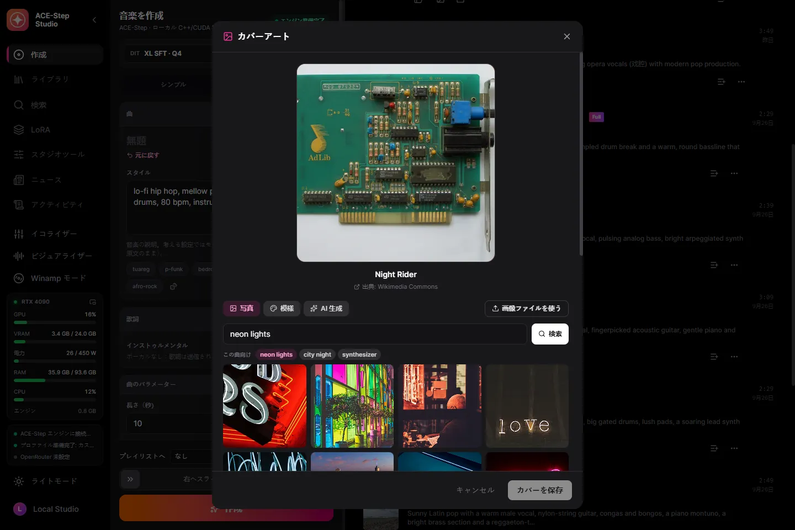
ジャケットのない曲には、スタイルに合う Wikimedia Commons の無料 CC0 写真、21 種類のスタイルの模様、または OpenRouter で生成したジャケットが付きます。
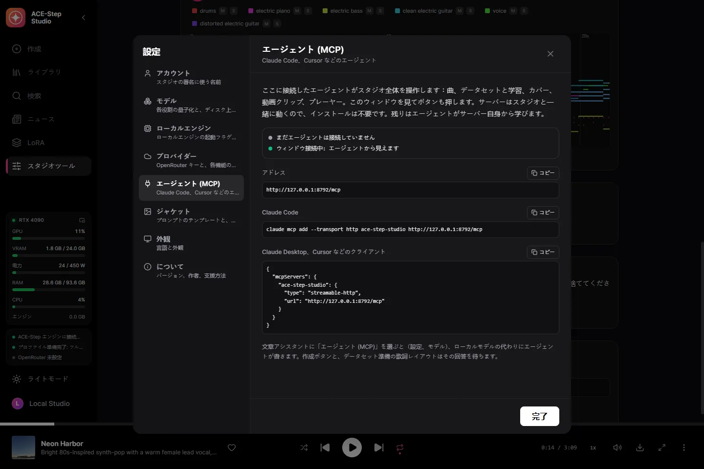
Claude Code、Claude Desktop、Cursor をつなぐと、エージェントがスタジオのすべて（164 ツール）を行い、ウィンドウを見て操作します。
スタジオそのものを、あなたの言語で。
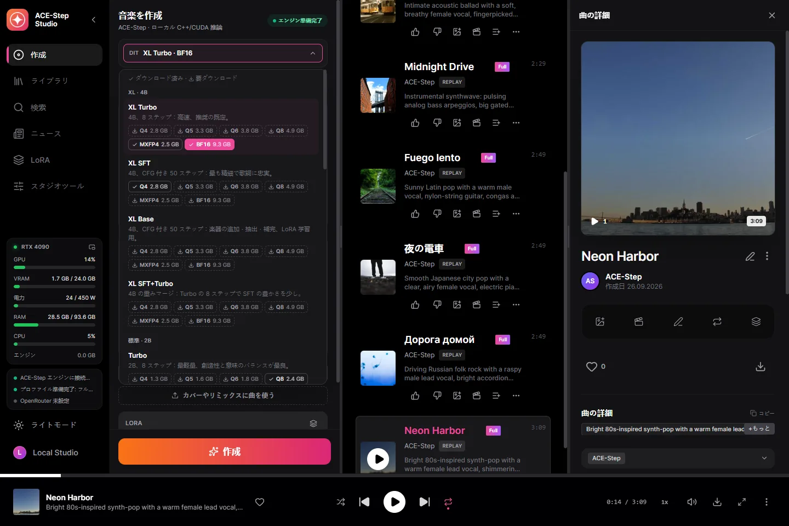
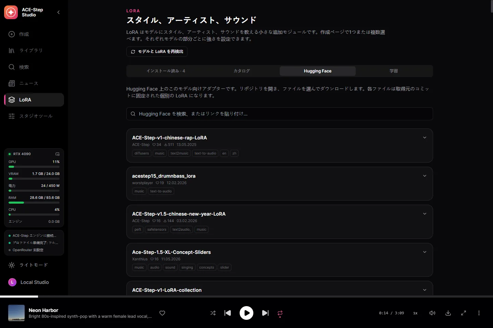
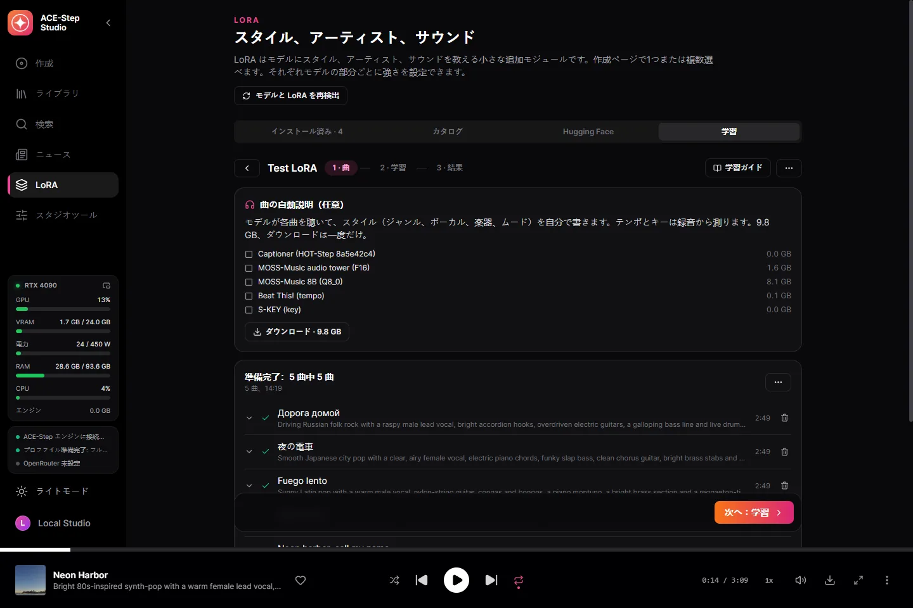
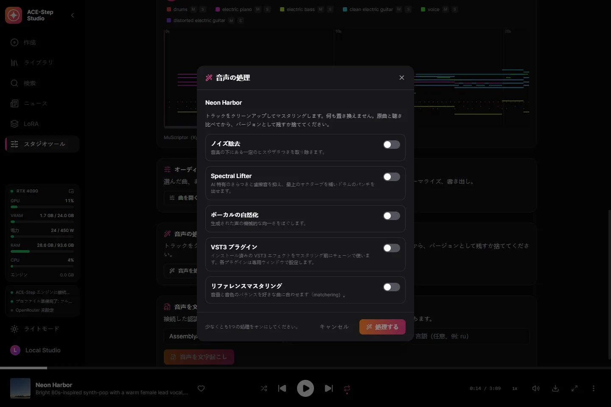
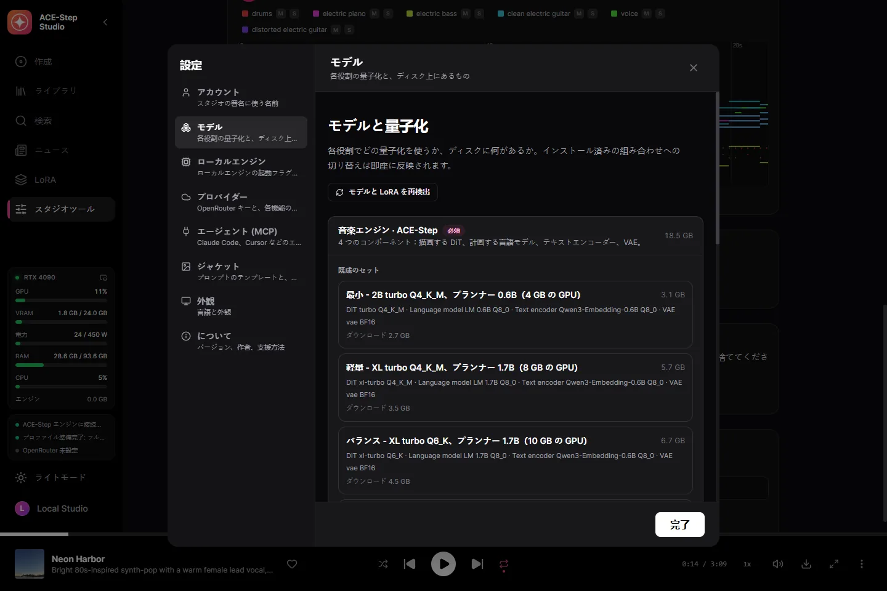
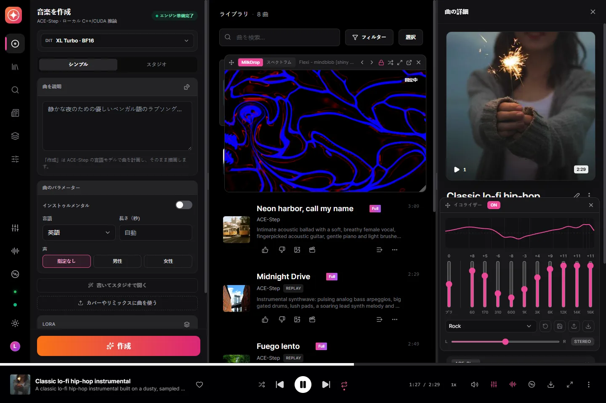
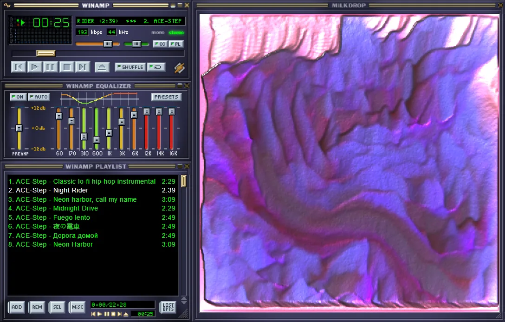
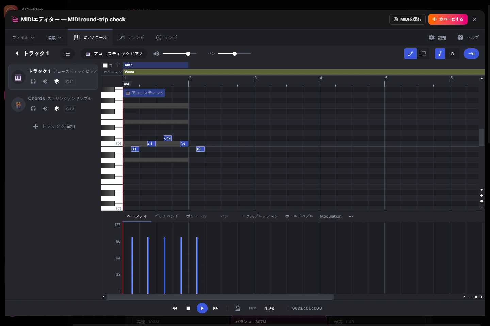
Windows 10/11 x64 と、VRAM 4 GB 以上の NVIDIA GPU（GTX 900 以降）。モデルは決めたときにスタジオ内からダウンロードします。
動かせるセットは DiT、プランナー、テキストエンコーダー、VAE で、すべて GGUF です。
| あなたの GPU | セット | ダウンロード |
|---|---|---|
| 24 GB | フルネイティブ — XL turbo BF16、プランナー 4B BF16 | 18.5 GB |
| 13 GB+ | 高品質 — XL turbo Q8_0、プランナー 4B Q8_0 | 10.1 GB |
| 10 GB+ | バランス — XL turbo Q6_K、プランナー 1.7B | 6.7 GB |
| 8 GB+ | 軽量 — XL turbo Q4_K_M、プランナー 1.7B | 5.7 GB |
| 4 GB+ | 最小 — 2B turbo Q4_K_M、プランナー 0.6B | 3.1 GB |
スタジオは GPU が動かせるセットをあらかじめ選びますが、ダウンロードするかは常にあなたが決めます。各ファイルは固定した Hugging Face のリビジョンと SHA-256 で照合され、中断したダウンロードは再開します。
はい。スタジオは無料のオープンソースで、モデルもスタジオ内から無料でダウンロードできます。
あなたの音楽はあなたのもので、あなたのディスクに残ります。
スタジオ、acestep.cpp、ACE-Step 1.5 は MIT。Regrind ファインチューンは CC BY-NC-SA 4.0、カタログの各 LoRA は作者のライセンスです。
1 人のアーティストやスタイルの曲が、HOT-Step のトレーナーと LoKR レシピで GPU 上で LoRA になります。すべての設定を変更でき、チェックポイントは 1 クリックで LoRA ライブラリへ。
Claude Code、Claude Desktop、Cursor をつなぐと、エージェントがスタジオのすべて（164 ツール）を行い、ウィンドウを見て操作します。ACE-Step の作詞ルールが付属するので、エージェントが自分で曲を書きます。
既定ではすべてローカル。クラウドの鍵は、選んだ機能のためにあなたが追加します。
| 部分 | 実行場所 | サイズ |
|---|---|---|
| ACE-Step エンジン（acestep.cpp） | あなたの GPU：CUDA、Vulkan、または CPU | 同梱 |
| ACE-Step モデルセット | あなたの GPU | 3.1〜18.5 GB |
| NVIDIA cuBLAS | NVIDIA のみ | 391 MB、1 回 |
| カラオケのタイミング — Parakeet または Whisper | あなたの PC | 任意 |
| ステム分離 — HT-Demucs | あなたの GPU または CPU | 任意 |
| 作詞アシスタント | ローカル Gemma または OpenRouter | 任意 |
| LoRA トレーナー — HOT-Step ace-train | NVIDIA RTX | 0.1 GB + BF16 の DiT、任意 |
| 耳で曲を説明 — MOSS-Music-8B | VRAM 約 12 GB | 9.8 GB、任意 |
| オーディオから MIDI — MuScriptor（HOT-Step ace-midi） | NVIDIA GTX 16 / RTX 20 以降 | 0.5〜5.6 GB、任意 |
| VST3 ホスト — HOT-Step | あなたの PC、独立したプロセス | 同梱 |
サービスはデスクトップの実行ファイルに組み込まれ、C++ エンジンを管理します。完成した曲はサービス自身が取り込むので、ウィンドウを再読み込みしたり閉じたりしても結果は失われません。
React UI ─┐
├─ ACE-Step-Studio.exe (Tauri window + Rust/Axum service)
Rust axum ┘ │
└─ acestep.cpp `ace-server` (C++/GGML, GGUF)